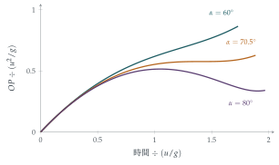

STEP II 2019、第9問
先に進む前に問題を読んでおこう。問題は、OCRが配布している2019年のSTEP問題一式（zipファイル）のSTEP IIに収録されている： www.ocr.org.uk/Images/696590-2019-past-papers.zip
導入
ボールを前方に投げれば、ボールは着地するまで自分から遠ざかっていく。当然である。真上に投げれば、ボールは戻ってくる。その中間のどこかで何かが変わるはずである。つまり、ボールがいったん遠ざかり、次に近づき、着地する前に再び遠ざかるような角度が存在するはずである。この問題では、その正確な境界値 \(\sin\alpha = \frac{2\sqrt2}{3}\)、すなわち約 \(70.5^\circ\) を求める。
この結果は、数学でよく見られる状況の好例である。誰もが単調（monotonic）だと思い込んでいる量が、実はそうではないのである。また、大学で常に用いられる標準的な手法も示している。距離が増加しているかどうかを調べるには、その2乗を微分すればよい。そうすれば平方根を避けられる。
取りかかる前に
\(OP\) よりも \(OP^2\) を扱う方が簡単なのはなぜか。「\(OP\) が増加する」ことと「\(OP^2\) が増加する」ことは同じだろうか。
\(OP^2 = x^2 + y^2\) は \(t\) の多項式（polynomial）であるが、\(OP\) には平方根が含まれる。\(OP \geq 0\) であり、2乗は非負の数の上で増加関数であるから、\(OP\) が増加するのは \(OP^2\) が増加するときであり、かつそのときに限る。
順を追って解く
段階 1 距離の2乗
\(x = ut\cos\alpha\)、\(y = ut\sin\alpha - \frac12gt^2\) とすると、 \[OP^2 = u^2t^2\cos^2\alpha + u^2t^2\sin^2\alpha - ugt^3\sin\alpha + \tfrac14g^2t^4 = u^2t^2 - ugt^3\sin\alpha + \tfrac14g^2t^4.\]
\(t\) について微分せよ。因数 \(t\) をくくり出すと、何が残るか。それがすべての \(t\) に対して正となるのはどのようなときか。
\[\frac{\mathrm{d}}{\mathrm{d}t}OP^2 = 2u^2t - 3ugt^2\sin\alpha + g^2t^3 = t\bigl(g^2t^2 - 3ug\sin\alpha\,t + 2u^2\bigr).\] \(t > 0\) のとき、符号は二次式（quadratic）\(g^2t^2 - 3ug\sin\alpha\,t + 2u^2\) の符号と一致する。この二次式の最高次の係数は正であるから、判別式（discriminant）が負ならば、すべての \(t\) に対して正となる： \[9u^2g^2\sin^2\alpha - 8u^2g^2 < 0 \quad\Longleftrightarrow\quad \sin^2\alpha < \frac89 \quad\Longleftrightarrow\quad \sin\alpha < \frac{2\sqrt2}{3}.\] このとき、\(OP\) は飛行中ずっと増加する。■
段階 2 より急な角度での投射
\(\sin\alpha > \frac{2\sqrt2}{3}\) ならば、この二次式は2つの実数解をもつ。それらは正だろうか。小さい方の解は、質点が着地する前だろうか。
解の和は \(\frac{3u\sin\alpha}{g} > 0\)、積は \(\frac{2u^2}{g^2} > 0\) であるから、2つの解はともに正であり、その間では二次式、したがって \(\frac{\mathrm{d}}{\mathrm{d}t}OP^2\) は負となる。質点は \(T = \frac{2u\sin\alpha}{g}\) で着地する。小さい方の解は \[t_1 = \frac{u}{2g}\bigl(3\sin\alpha - \sqrt{9\sin^2\alpha - 8}\bigr) < \frac{u}{2g}\cdot3\sin\alpha < \frac{2u\sin\alpha}{g} = T.\] よって、\(t_1\) の直後（かつ着地前）において \(OP\) は減少している。■

段階 3 動く観測者
\(Q\) は地面に沿って逆方向に速さ \(v\) で \(O\) から遠ざかる。\(Q\) から測ると、水平方向の隔たりは \(x + vt\) となる。これは計算にどのような影響を与えるか。
隔たり \(QP\) の水平成分は \((u\cos\alpha + v)t\)、鉛直成分は \(ut\sin\alpha - \frac12gt^2\) である。よって \[QP^2 = \bigl((u\cos\alpha + v)^2 + u^2\sin^2\alpha\bigr)t^2 - ugt^3\sin\alpha + \tfrac14g^2t^4,\] となり、これは先ほどの式の第1項で \(u^2\) を \(w^2 = (u\cos\alpha + v)^2 + u^2\sin^2\alpha\) に置き換えたものと同じである。導関数（derivative）は \(t\bigl(g^2t^2 - 3ug\sin\alpha\,t + 2w^2\bigr)\) であり、これがすべての \(t > 0\) に対して正となる条件は、両辺から \(8u^2\sin^2\alpha\) を消去すると \[9u^2\sin^2\alpha < 8w^2 \quad\Longleftrightarrow\quad u^2\sin^2\alpha < 8(u\cos\alpha + v)^2,\] となる。平方根をとると（\(u\sin\alpha\) と \(u\cos\alpha + v\) はともに正である）、これは \(u\sin\alpha < 2\sqrt2(u\cos\alpha + v)\) となり、整理すると \[2\sqrt2\,v > (\sin\alpha - 2\sqrt2\cos\alpha)u. \qed\] （このとき導関数はすべての \(t > 0\) に対して正となるので、これは \(QP\) が飛行中ずっと増加するための十分条件である。）
振り返り
2乗を微分する。距離の2乗は多項式であり、その導関数は距離の導関数と同じ符号をもつ。
常に正である二次式。「すべての時刻で増加する」という条件は、判別式の条件になった。
新しい問題を古い問題として見る。動く観測者によって変わったのは係数1つだけだったので、先の解析がそのまま適用できた。
背後にある数学
幾何学的な見方
\(OP\) が減少するのは、\(P\) の速度が「内向き」、すなわちベクトル \(\overrightarrow{OP}\) と鈍角（obtuse angle）をなすとき、つまり \(\overrightarrow{OP}\cdot\mathbf{v} < 0\) のときであり、かつそのときに限る。急な角度で投げた場合、飛行の最高点付近では、質点は投げた人のはるか上方かつわずかに前方にあり、ほぼ水平に遠ざかる向きに動いているが、落下し始めている。\(\overrightarrow{OP}\) の方向を基準にして、速度の下向きの成分が外向きの成分を上回ると、質点は近づいてくる。浅い角度で投げた場合、質点は常に十分前方にあるので、その速度が \(O\) の方へ向くことはない。臨界的な場合とは、ちょうど1つの瞬間に速度が \(\overrightarrow{OP}\) と垂直（perpendicular）になる場合であり、これが図 11.10.1 において距離が一瞬止まる瞬間である。
単調性は自明ではない
「明らかに」増加すると思える量の多くは、実は増加しない。地球から月までの距離は振動する。曲がりくねった道路を走る2台の車の間の距離は、一方が常に前にいても減少することがある。捕食者の個体数は、獲物が増えている間に減少することがある。ある量が単調であることを証明するには、通常、導関数の符号が一定であることを示す。ここでの手法（多項式に帰着させ、その解または判別式を調べる）は、それを行う標準的な方法である。解析学では、単調性はしばしば収束（convergence）を証明する鍵となる。第 2章で見たように、有界な単調数列は収束する。
思考のスキル
ある量が常に増加するかどうかを判定するには、それ（またはその2乗のように扱いやすい関数）を微分し、導関数の符号が変わり得るかどうかを問えばよい。
大学では、この種の符号に関する議論は、不等式の証明、最大値・最小値の位置の特定、そして微分方程式（differential equation）の解の安定性（stability）の研究に用いられる。安定性の研究では、常に減少する量（第 8.2 節 のように）が、系が落ち着くことを証明する。
次の一歩
どこまで近づくか。\(\alpha = 80^\circ\) のとき、\(OP\) が極大（local maximum）・極小（local minimum）となる時刻と、そのときの距離を \(u^2/g\) を単位として求めよ。
斜面上で。水平面と角 \(\beta\) をなす斜面を上る向きにボールを投げ、斜面上に着地する場合について、小問 (i) を繰り返せ。（斜面から測った）臨界角は変わるか。
空気抵抗がある場合。ボールが速度に比例する抵抗も受けるとする。計算せずに、臨界角は \(70.5^\circ\) より大きくなると予想されるか、小さくなると予想されるか。それはなぜか。
高い所から投げる。ボールを崖の上から投げ、はるか下に着地する場合、どのような角度に対しても \(OP\) は最終的には増加することを示し、ある段階で \(OP\) が減少するような角度が存在するかどうかを調べよ。
さらに学ぶために
James Walker, The Flying Circus of Physics（Wiley）。日常の物理に関する意外なパズルが何百も収められている。
David Morin, Introduction to Classical Mechanics（Cambridge University Press）。第3章は放物運動を扱い、直観に反する問題がいくつか含まれている。
J. M. Steele, The Cauchy–Schwarz Master Class（Cambridge University Press）。あるものが常に別のものより大きいことを証明する技法を扱う。